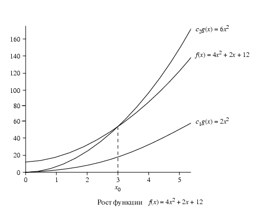

Общее время (time complexity) параллельного алгоритма
Параллельный алгоритм можно охарактеризовать общим временем.
Начнем с оценки числа вычислительных шагов, включающих в себя все арифметические
и логические операции. Их число в терминах количества данных будет характеризовать
затраченное на вычисления время. Для этого введем систему обозначений O.
Определение: f(x)=O(g(x)) тогда и только тогда,
если существуют положительные константы c и x0 такие, что
0=f(x)=c*g(x) для любых x>=x0, где f(x) и g(x) функции от x.
Пример:
Для f(x)=4x2+2x+12: константа c=6 подходит для
формального определения f(x)=O(x2), поскольку 0<4x2+2x+12=6x2 для x>=3.

Мы можем понимать О( ) как "рост по крайней мере так быстро как".
Аналогично можно ввести оценку снизу: omega( ) Определение: f(x)=omega(g(x)) тогда и только тогда,
если существуют положительные константы c и
x0 такие, что 0<=c*g(x)<=f(x) для любых
x>=x0.


 [Назад]
[Оглавление]
[Вперед]
[Назад]
[Оглавление]
[Вперед]